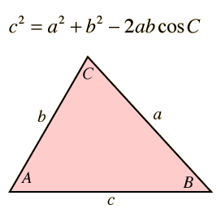

| Click on the highlighted text for either side c or angle C to initiate calculation. |
 |
Enter data for sides a and b and either side c or angle C. Then click on the active text for the unknown quantity you wish to calculate.
Calculation of side c is straightforward, but calculation of sides a or b is more involved since changing either side c or angle C forces changes in both a and b. To calculate a or b, first use the law of sines to find the angle opposite the side you wish to calculate. Then use the law of cosines to find the unknown side length.
|